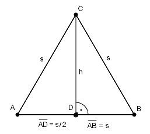

Pythagoras Aufgabe 21 Ein gleichseitiges Dreieck hat einen Umfang von 60 cm. Wie groß ist seine Fläche A in cm2?

Im gleichseitigen Dreieck halbiert die Höhe die Grundseite. U = 3 * s | :3 U 60 cm s = --- = ------- = 20 cm 3 3 Satz von Pythagoras im Dreieck ADC: AC2 = AD2 + h2 | -AD2 h2 = AC2 - AD2 h2 = 202 cm2 - 102 cm2 = 300 cm2 |√ h = = 17,3 cm AB * h 20 cm * 17,3 cm A = -------- = ----------------- = 173 cm2 2 2